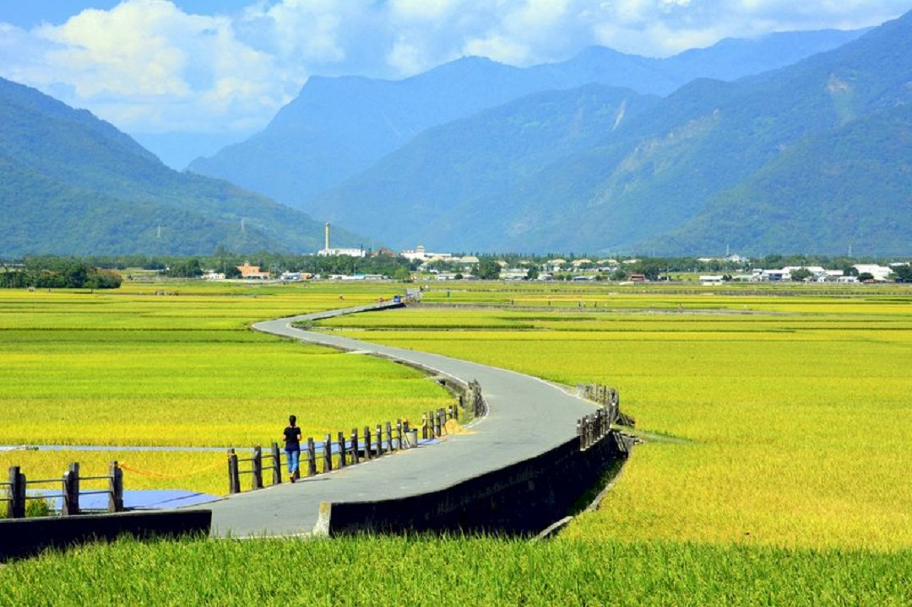
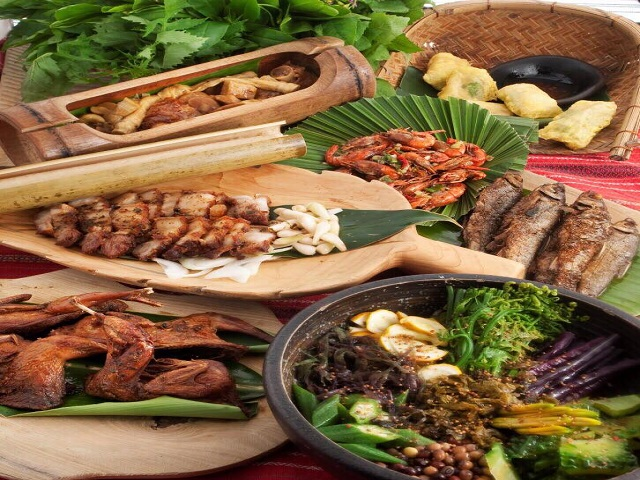
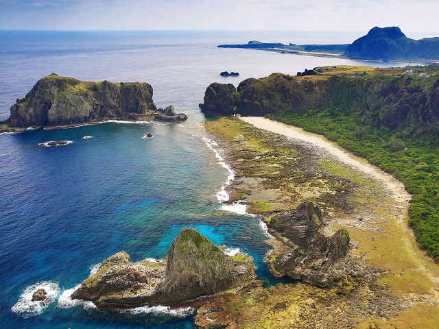
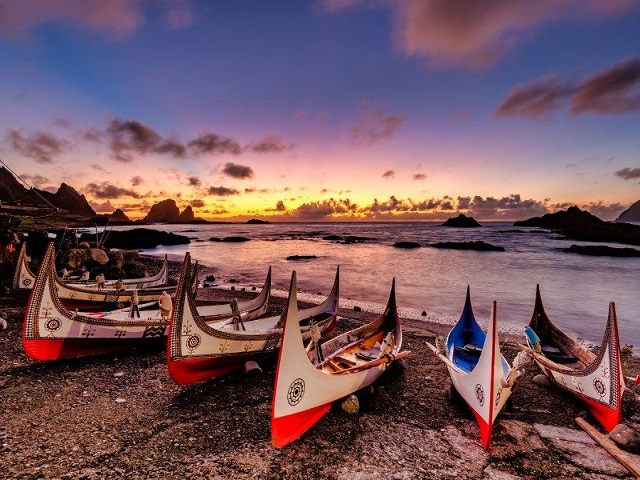

ToDo
Taitung

Food:
原民料理(Indigenous Cuisune)

You can Taste the most Taiwanese taste from it because it is made from Indigenous in Taiwan. All the ingredients are from the mountain.
Attractions:
三仙台(Sanxiantai)
Enjoy the sea wave there, standing on the dragon shape bridge to cross the sea, sometimes yhe sunset will surprise you.
綠島(Green Island)

Enjoy the hot spring there, and it is the good place to dive, when diving, you will see many kinds of colorful corals, how charming!
蘭嶼(Lanyu)

Listen the shout of Dawu people, you must come here in March to September, Enjoy the vibe with the people there.
Transport:
Taoyuan Airport →→ Bus/MRT →→ Taipei Train Station →→ Taitung | Taoyuan Airport →→ Bus →→ Songshan Airport →→ Airplane →→ Taitung
Picture Copyright:
台東圖片提供:中央廣播電台 / 原民料理圖片提供:Tripbaa趣吧 / 三仙台圖片提供:Agoda / 綠島圖片提供:Tripbaa趣吧 / 蘭嶼圖片提供:KK部落格
ToDo